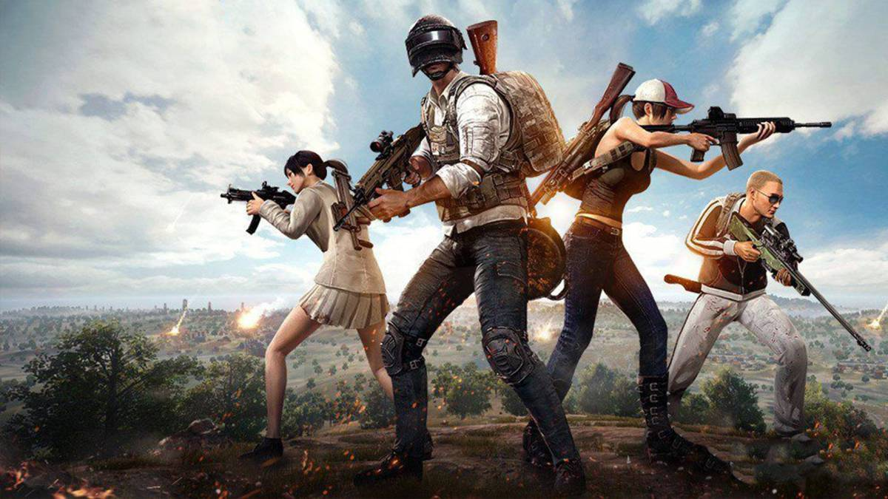
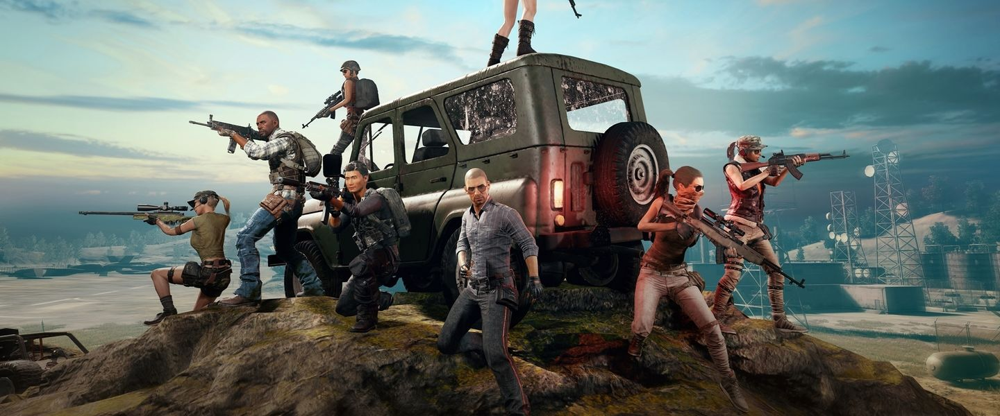
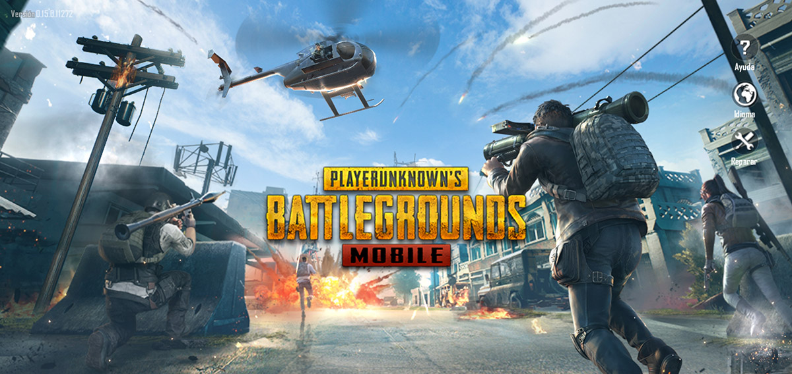

Es un videojuego de acción en el cual hasta 100 jugadores pelean en una Batalla Real (Battle Royale), un tipo de combate a muerte en el cual hay enfrentamientos para ser el último con vida. Los jugadores pueden ingresar a la partida en solitario, o con un pequeño equipo compuesto por el propio jugador y una, dos o tres personas más, formando respectivamente un dúo, un escuadrón de tres o cuatro jugadores. La última persona o equipo con vida gana la partida.
Cada partida comienza con los jugadores que saltan en paracaídas de un avión a una isla, hacia determinadas partes que ellos mismos eligen. La zona de juego es de aproximadamente 8 x 8 o 4 x 4 kilómetros de tamaño; estos comienzan sin artículos aparte de las opciones adaptables de la ropa que seleccionan antes de una partida; todo lo anterior desde un avión que sobrevuela aleatoriamente el mapa en línea recta. Una vez aterrizan, los jugadores pueden buscar edificios y otros sitios o estructuras para encontrar armas, vehículos, armaduras y otro equipamiento. Estos artículos se distribuyen por todo el mapa al comienzo de la partida, con ciertas zonas de alto riesgo, pero, con mejor equipamiento. Estos pasan a permanecer ocultos para evitar ser asesinados o cazar a otros jugadores mientras continúan buscando más equipamiento. Los jugadores asesinados pueden ser saqueados para adquirir su equipamiento. Durante el transcurso del juego un avión volará sobre varias partes aleatorias del mapa jugable y dejará caer un paquete de botín que contiene elementos que normalmente solo se pueden obtener en ese paquete de botín. El paquete también emite un humo rojo altamente visible, atrayendo a interesados cerca de él. Los jugadores pueden optar por jugar desde la perspectiva de primera o tercera persona, cada uno con sus propias ventajas y desventajas en el combate y la conciencia situacional.
Cada pocos minutos, el área "segura" del mapa comienza a encogerse hacia un lugar aleatorio, cualquier jugador que se mantenga o quede fuera de la zona segura recibe daño con el tiempo y finalmente muere. Esta se ve como una pared azul brillante que se contrae con el tiempo, forzando a los jugadores a dirigirse hacia áreas más confinadas y así aumentan las posibilidades de encuentros con demás sobrevivientes. Durante el transcurso de la partida, regiones aleatorias del mapa están resaltadas en rojo y son bombardeadas, siendo una amenaza para los que permanecen en esa zona.
En ambos casos, los jugadores son advertidos unos minutos antes de estos eventos, dándoles tiempo para trasladarse a un lugar seguro. En promedio, una ronda completa no toma más de 30 minutos.
Al final de cada partida, los jugadores ganan dinero en base al tiempo que sobrevivieron, cantidad de asesinatos y el daño provocado. El dinero se utiliza para comprar cajas que contienen elementos cosméticos para la personalización de los personajes. También se pueden comprar otros objetos estéticos utilizando dinero real que el jugador podrá utilizar.
